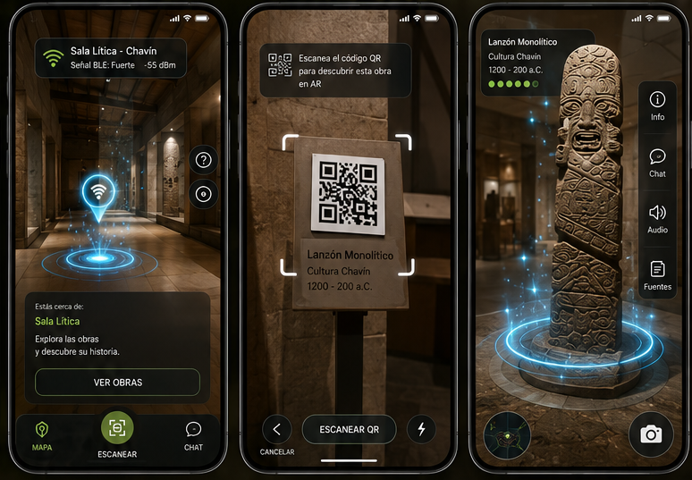
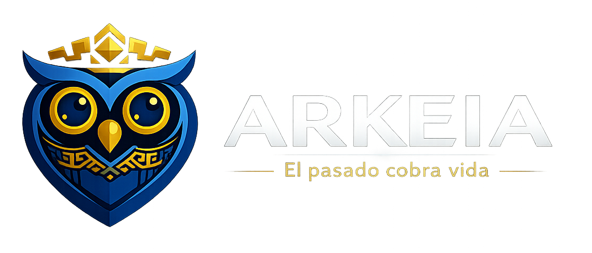
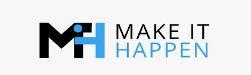
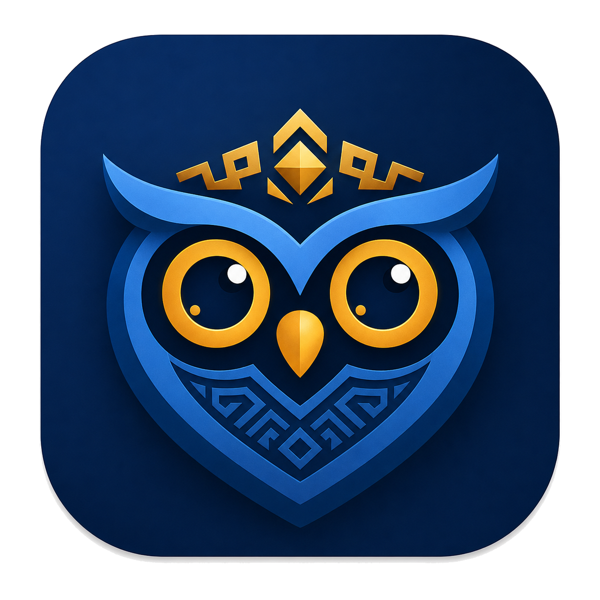
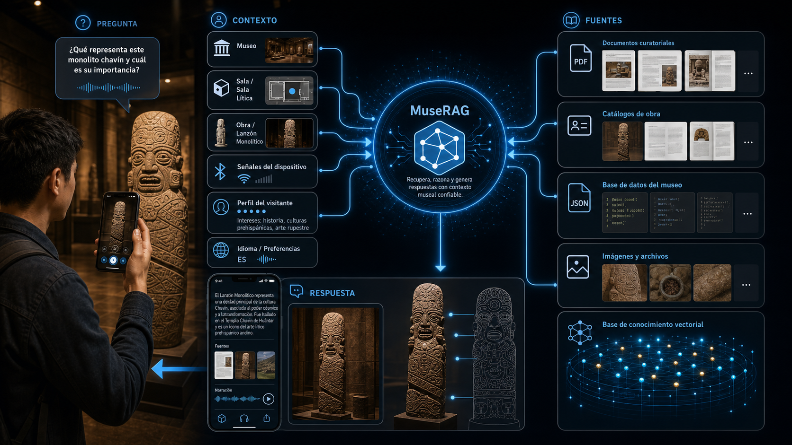
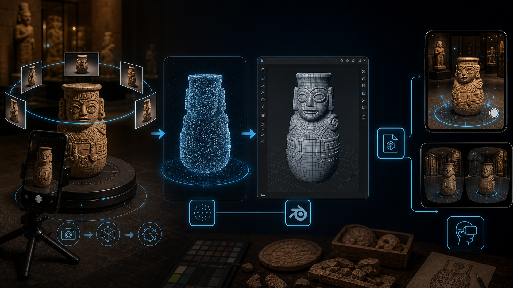

Mediación cultural contextual e inmersiva
ArkeIA
El pasado cobra vida
Equipo: ArkeIA
Junio 2026
Expositor: Equipo ArkeIA
Make It Happen

Contenido
ArkeIA · Presentación del proyecto
Justificación
Objetivos
Marco teórico
Metodología y avances
Resultados y próximos pasos
02 / ContenidoEl pasado cobra vida
01 · Problema y estado del arte
Visitas fragmentadas
Los museos necesitan entregar información situada, accesible y confiable sin elevar la complejidad operativa.
Mediación estática
Cartelas, recorridos lineales y audioguías poco adaptativas no consideran el momento ni el lugar de observación.
Contexto perdido
La información no se ajusta con suficiente precisión a la sala, zona, obra probable o ritmo del visitante.
Accesibilidad limitada
La dependencia de lectura sostenida y navegación manual crea barreras para distintos perfiles de usuario.
Restricción institucional
Los museos necesitan soluciones sostenibles, modulares y compatibles con presupuestos y capacidades heterogéneas.
Síntesis basada en la tesis, secciones 1.2, 2.2 y 6.2.
03 / ProblemaArkeIA
01 · Problema y estado del arte
Condiciones habilitantes y brechas
El dispositivo ya está. Falta activar el contexto.
Hogares peruanos con smartphone
La cobertura alcanzada en 2024 habilita un enfoque BYOD sin entregar un dispositivo por visitante.
OSIPTEL [2]Visitas a museos estatales en 2024
La recuperación pospandemia confirma una masa crítica para probar nuevas formas de mediación presencial.
Ministerio de Cultura [9]Identificación de sala con BLE
Un despliegue en el Foz Côa Museum validó que reconocer ambientes puede ser útil sin precisión centimétrica.
Verde et al., 2023 [13]Descarga reportada de apps de audioguía
La fricción de instalación obliga a diseñar una experiencia ligera, útil desde el primer contacto y con alternativas QR.
Sala, 2025 [23]04 / EvidenciaPerú · 2024
01 · Problema y estado del arte
Las capacidades existen, pero suelen estar fragmentadas
Oferta tecnológica comparada
Solución / referente
BYOD
Contexto espacial
Voz
IA con fuentes
Bloomberg Connects
Sí
No central
No central
Limitada
Smartify / SmartGuide
Sí
No central
Parcial
Parcial
Locatify / Navigine
Sí
BLE / indoor
No central
Baja
Verde (BLE) / Wang (voz)
Prototipo
Separado
Separado
No
ArkeIA
Sí
Sala / zona
TTS / STT
RAG
El aporte es la integración deliberada y su adecuación al contexto peruano
Síntesis de la tesis, capítulo 4; referentes [12], [13], [16], [30], [31], [38] y [39].
05 / Estado del arteIntegración frente a soluciones parciales
02 · Justificación
Mediación, no espectáculo tecnológico
ArkeIA activa la tecnología solo cuando ayuda a comprender.
Detectar
BLE reconoce la sala y estima la zona del visitante.
Contextualizar
La app relaciona ubicación, orientación, obra y recorrido.
Comprender
MuseRAG responde con evidencia bibliográfica y contexto curatorial.
Explorar
GLB, AR y recorridos VR revelan estados, detalles y espacios difíciles de observar.
Compartir
Videos culturales conectan la experiencia del museo con nuevas audiencias.
06 / JustificaciónExperiencia cultural continua
03 · Objetivos
Una guía que entiende el contexto
Objetivo general
Desarrollar una plataforma de mediación cultural que personalice la visita mediante contexto físico, conocimiento verificable e interacción inmersiva.
Identificar sala, zona y obra probable sin interrumpir la experiencia física del visitante.
Ofrecer narración, preguntas y respuestas contextualizadas con fuentes culturales trazables.
Integrar recursos 3D, AR, VR y contenido social como capas complementarias de aprendizaje.
07 / ObjetivosArkeIA
04 · Marco teórico
Seis fundamentos del diseño
El contexto convierte datos en mediación cultural
Mediación in situ
La capa digital acompaña la visita física y amplía el alcance de la curaduría sin sustituirla.
Contexto semántico
Sala, zona y recorrido son unidades interpretativas, no simples coordenadas geométricas.
Localización funcional
El valor está en reconocer el contexto probable con fiabilidad suficiente, no en la precisión centimétrica.
Multimodalidad
Texto, audio y voz sostienen continuidad interpretativa y diferentes rutas de accesibilidad.
RAG y trazabilidad
La respuesta se subordina al corpus curatorial y conserva evidencia documental verificable.
Escalabilidad responsable
Modularidad, bajo costo y despliegue progresivo responden a la heterogeneidad institucional peruana.
Síntesis de la tesis, capítulo 6: mediación, contexto espacial, multimodalidad, RAG y sostenibilidad.
08 / Marco teóricoMediación · Contexto · Evidencia · Escalabilidad
04 · Marco teórico
Diseñar alrededor de las restricciones
Tecnología suficiente, accesible y trazable
Proximidad ligera
Advertising de bajo consumo y RSSI para reconocer sala o zona con despliegue incremental.
Dispositivo disponible
El smartphone reúne Bluetooth, sensores, micrófono, audio y pantalla sin hardware dedicado por visitante.
Acceso multimodal
TTS y STT reducen dependencia de lectura y mantienen la mirada en el entorno físico.
IA gobernada
La recuperación previa limita respuestas libres y mantiene coherencia con las fuentes del museo.
Fuentes clave: Wang (2024), Verde et al. (2023), Android Developers, Leitch et al. (2023), Lewis et al. (2020) y Béchard & Ayala (2024).
09 / CriteriosCosto · Accesibilidad · Trazabilidad
05 · Metodología y avances
Construcción iterativa del MVP
Diseñar, probar, medir y volver al museo
Investigar
Flujo museográfico, bibliografía, necesidades del visitante y restricciones del dispositivo.
Modelar
Salas, zonas, obras, QR, capacidades inmersivas y contratos de contenido.
Construir
Repositorios desacoplados para app, IoT, conocimiento, 3D y comunicación.
Simular
Bridge de ubicación y activos locales para validar el recorrido antes del despliegue físico.
Validar
Pruebas en celular, QA de GLB, documentación, logs y evaluación progresiva del visitante.
DescubrimientoPrototipoPrueba técnicaPiloto museográfico
10 / MetodologíaMVP evolutivo
05 · Metodología y avances
Arquitectura del ecosistema
iot-museiq
ESP32 BLE y simulador de ubicación: sala, zona y proximidad.
museiqApp
Experiencia del visitante: recorrido, QR, audio, preguntas, AR y VR.
MuseRAG
Biblioteca cultural, recuperación semántica, respuestas y fuentes.
Muse3D
Exportación, optimización, validación y catálogo de modelos GLB.
Cultural Video
Videos verticales con mapas, 3D, voz y evidencia para comunidad.

11 / ArquitecturaUn ecosistema, una experiencia
05 · Metodología y avances
Flujo del visitante
Antes, durante y después del museo
Descubre
Contenido cultural en redes.
Ingresa
Selecciona museo e inicia visita.
Se ubica
BLE detecta sala o zona.
Observa
La app sugiere una obra probable.
Profundiza
Escucha, pregunta o confirma por QR.
Explora
Interactúa con reconstrucciones 3D.
Se sumerge
Una sala especial activa el tour VR.
La obra física sigue siendo el centro de la experiencia
12 / RecorridoArkeIA acompaña, no interrumpe
05 · Metodología y avances
Demo integrada · App + recorrido simulado
Sala normal
Seis zonas y obras de prueba, sugerencia contextual y confirmación mediante QR.
Interacción
Narración, voz, preguntas, fuentes e imágenes relacionadas sin abandonar la obra.
Desarrollo seguro
Simulador de ubicación desde terminal para probar el recorrido antes de instalar beacons.
13 / AvancesReact Native · Expo · ESP32 BLE
05 · Metodología y avances
Conocimiento verificable + activos reutilizables

MuseRAG
Responde con el contexto de la sala y la obra, recuperando fragmentos de una biblioteca especializada y conservando las fuentes.

Muse3D
Transforma fuentes Blender o GLB en activos móviles optimizados, validados, catalogados y listos para publicar.
14 / AvancesFuentes + GLB + contratos de contenido

Sala inmersiva
Recorrer un espacio reconstruido desde dentro
Cuando BLE identifica una sala VR, ArkeIA ofrece recorridos Cardboard con visión estereoscópica, seguimiento de cabeza, ruta, narración por tramo y entorno 3D.
SBS
Head tracking
Tour guiado
Narración
05 · Metodología y avances
VR accesible con un celular
15 / AvancesExperiencias inmersivas locales
05 · Metodología y avances
De la investigación a la comunidad
La visita comienza antes de entrar al museo
El motor genera videos verticales con mapas, piezas 3D, voz y Evidence Cards. La misma base documental alimenta las respuestas de la app y el contenido público.
Descubrir → visitar → comprender → compartir
16 / AvancesRemotion · Voicebox · Evidencia cultural
06 · Resultados preliminares
MVP integrado
Capacidades demostrables hoy
Repositorios especializados
App, IoT, RAG, 3D y contenidos conectados por contratos claros.
Obras en sala piloto
Zonas, QR y recursos complementarios para probar el flujo normal.
Recorridos VR locales
Experiencias seleccionables con rutas creadas desde Blender.
Templates culturales
Pieza 3D, cultura, efeméride, misterio, sitio, ruta, personaje y comparación.
Videos MVP terminados
Narración generada, evidencia visible y formato vertical listo para mostrar.
Base de conocimiento compartida
La biblioteca especializada conecta experiencia móvil y comunicación social.
17 / ResultadosValidación técnica antes del piloto físico
06 · Resultados y próximos pasos
Del MVP al piloto museográfico
Piloto físico
Calibrar RSSI, orientación y movimiento con los beacons S1–S4 en una sala real.
Catálogo 3D único
Cerrar Muse3D → MuseRAG → app y reutilizar el mismo catálogo en videos.
Narrativa remota
Servir guiones, hotspots y narración de tours desde contratos curatoriales.
Evaluar impacto
Medir comprensión, orientación, satisfacción y deseo de continuar explorando.
18 / CierreGracias